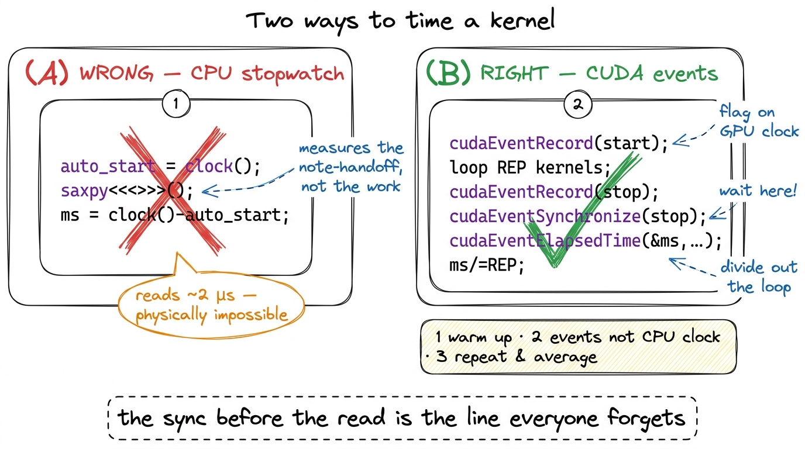
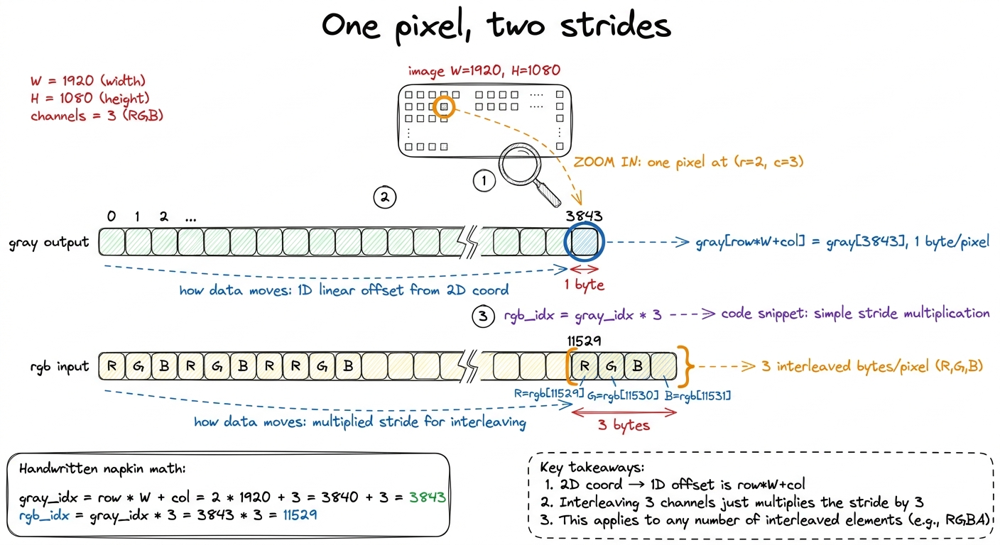
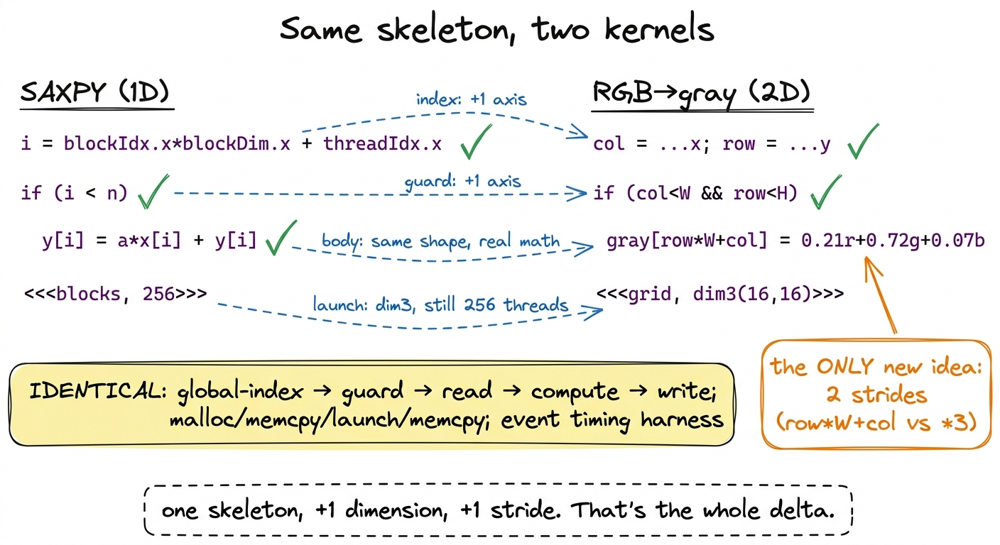

Your first kernel, end to end
Let me start with a confession about how I learned this. The first CUDA kernel I ever "wrote" I copied from a tutorial, ran, saw a number print, and had absolutely no idea what had just happened. Which parts ran on the CPU? Which ran on the GPU? When exactly did the arithmetic happen? I could not have told you. So this article is the one I wish I'd had: we build two complete, correct, benchmarked kernels from an empty file, and by the end you will be able to point at every single line and say what machine it runs on and when.
Here is the question the article answers: what is the smallest complete thing a GPU program has to do, and how do I know I did it right? Not "how do I go fast" — that comes later, in every other article on this site. First, the skeleton.
And the skeleton is always the same four moves. Get some memory onto the device. Launch a grid of threads over it. Have each thread do a little arithmetic on its own slice. Get the answer back. That is the whole job. Coalescing, shared memory, tensor cores — the optimizations that fill the rest of this site — are all refinements to move three. They mean nothing until moves one, two, and four are second nature. So before we chase a single percent of cuBLAS, we get the four moves into our fingers.
We build two kernels. The first is SAXPY, the "hello world" of GPU compute. The second, RGB→grayscale, is the exact same skeleton with two spatial dimensions and a real memory layout — which is all an image is. Neither kernel is fast, and neither is supposed to be. Both are memory-bound by construction: they do one or two flops per byte and could never be anything else. So this is not an article about speed. It is about the workflow, and about the one thing that trips up every single beginner — timing a thing that runs on someone else's clock.
The one picture to hold in your head
Before any code, let's build the mental model we'll reuse the whole way through. A CPU is a small team of very fast, very clever workers. A GPU is a stadium of tens of thousands of simpler workers who all do roughly the same thing at the same time. If you have a million independent little tasks — like "multiply this number by two" a million times over — the stadium wins, and it wins by a lot.
But a stadium has a rule you cannot break: the workers cannot reach into the CPU's desk. The GPU has its own memory (we call it HBM, high-bandwidth memory — think of it as the field the stadium sits on) and the GPU's workers can only touch data that is already on the field. Your x and y arrays start life in the CPU's RAM, up in the stands. Somebody has to physically carry them down onto the field before a single GPU worker can look at them. And when the work is done, somebody has to carry the answer back up.
That carrying is not free, and it is not instant, and — this is the part that will bite us later — the CPU does not stand around waiting for it. The CPU hands the GPU a note ("run this kernel"), the GPU gets to it whenever, and the CPU walks away to do other things. Two clocks, running independently. Keep that image; it explains almost everything that surprises a beginner.
 figure rendering · The mental model we reuse all article. The GPU is a stadium of simple
figure rendering · The mental model we reuse all article. The GPU is a stadium of simple SAXPY: one thread, one element
SAXPY stands for Single-precision A·X Plus Y: given a scalar a and two vectors x and y, compute y = a·x + y element-wise. It is one line of math. And the GPU decomposition is the one you will reach for a thousand times: one thread per element. Thread i reads x[i] and y[i], does one multiply and one add, writes y[i] back. No thread talks to any other. Every worker in the stadium has one seat, does one tiny sum, and never looks at a neighbor.
This "embarrassingly parallel map" is Puzzle 1 of Sasha Rush's GPU-Puzzles, and it is the mental model to burn in first.1 GPU-Puzzles builds its early kernels in exactly this order — Map, Zip, Guards, Map-2D, Broadcast, Blocks, Blocks-2D, Shared — which is not a coincidence. It is the natural dependency graph of the programming model, and this article walks the same staircase in CUDA C++ instead of Numba. SAXPY is Map+Zip; the grayscale kernel is Map-2D+Blocks-2D; shared memory (the next article) is Puzzle 8.
The kernel itself is almost anticlimactic:
__global__ void saxpy(int n, float a, const float* x, float* y) {
int i = blockIdx.x * blockDim.x + threadIdx.x;
if (i < n) // the guard — see below
y[i] = a * x[i] + y[i];
}Three things are load-bearing here, and it's worth slowing down on each because they recur in every kernel you'll ever write.
__global__ marks this as a kernel: code that runs on the device but is launched from the host. That word "global" is confusing the first time — it has nothing to do with global memory. It just means "callable from the host, runs on the device." Think of it as the label on the note the CPU hands over.
The index computation blockIdx.x * blockDim.x + threadIdx.x is the single most important arithmetic expression in all of CUDA. It is how a thread discovers which element it owns. Every one of the tens of thousands of threads runs this exact same line of code — that's the whole point of the stadium, everyone runs the same program — but each thread gets different values for blockIdx.x and threadIdx.x, so each computes a different i. Same code, different seat number. That's how "everyone does the same thing" still lets each worker touch a different element.
And the if (i < n) is the guard, the boundary check. It is not optional, and I'll show you exactly why in a moment — but first let's watch a single thread figure out its identity.
 figure rendering · The global thread index. Each thread turns its block and lane identity
figure rendering · The global thread index. Each thread turns its block and lane identityWhy the guard is not optional
Let's think about where those extra threads even come from, because the reason is baked into how launches work. I want one thread per element. But threads only come in blocks of a fixed size — you don't launch threads individually, you launch blocks of them — and n is almost never a clean multiple of the block size.
A block of 256 threads is a good default. Why 256? It's big enough to give the hardware plenty of work to hide memory latency behind, it's a multiple of the 32-thread warp (the true unit of execution — 32 threads that move in lockstep), and it's well under the 1024-threads-per-block ceiling.2 256 is a default, not a law. Good block sizes are multiples of 32 (the warp size) and usually land between 128 and 512. The "best" value depends on register and shared-memory pressure per thread — it's an occupancy question — but for a memory-bound map like this one, anything in that range performs about the same, so 256 it is. To cover n elements with blocks of 256, I need ceil(n / 256) blocks:
int threads = 256;
int blocks = (n + threads - 1) / threads; // ceil-div, rounds UP
saxpy<<<blocks, threads>>>(n, 2.0f, d_x, d_y);That (n + threads - 1) / threads is integer ceiling division — the standard idiom for "round up." It's the point of this whole section, so let's put real numbers through it. For n = 1,000,000 and threads = 256:
(1,000,000 + 255) / 256 = 1,000,255 / 256 = 3907 blocks (integer division drops the remainder).
3907 × 256 = 1,000,192 threads.
That's 192 more threads than I have data for. Those 192 extra workers show up to the stadium, run the exact same kernel body as everyone else, and compute an index i of 1,000,000 through 1,000,191 — indices that point past the end of my arrays.3 The alternative — sizing the grid to divide evenly and looping inside the kernel (a grid-stride loop) — is the more scalable pattern for huge arrays, and it's what I reach for in production. But for a first kernel the round-up-and-guard form makes the boundary problem impossible to ignore, which is the pedagogical point.
Without if (i < n), thread 1,000,192 would happily execute y[1000192] = a*x[1000192] + y[1000192] — reading and writing memory I never allocated. This is an out-of-bounds access, and here's the honest, scary part: on a good day it crashes with an error you can debug, and on a bad day it silently reads garbage or scribbles into a buffer some other part of your program owns, and you get a wrong answer three kernels later with no crash to point at. The guard is one branch that costs, at most, a few idle lanes on exactly one warp of exactly one block. It is the cheapest insurance in computing. Write it every time.
The host/device dance
The kernel is the easy half. The unglamorous half is that stadium rule from the mental model: the GPU cannot see the CPU's memory. x and y live in host RAM; the kernel reads device memory (HBM). So every GPU program is the four-beat rhythm we drew: allocate on device → copy in → launch → copy out.
float *d_x, *d_y;
size_t bytes = n * sizeof(float);
cudaMalloc(&d_x, bytes); // 1. allocate on device
cudaMalloc(&d_y, bytes);
cudaMemcpy(d_x, h_x, bytes, cudaMemcpyHostToDevice); // 2. copy in
cudaMemcpy(d_y, h_y, bytes, cudaMemcpyHostToDevice);
saxpy<<<blocks, threads>>>(n, 2.0f, d_x, d_y); // 3. launch
cudaMemcpy(h_y, d_y, bytes, cudaMemcpyDeviceToHost); // 4. copy out
cudaFree(d_x); cudaFree(d_y);Two things about this code are exactly the kind of thing that bites you, and neither is obvious.
First, the d_ versus h_ prefix convention is not decoration — it's the only type safety you get. To C++, d_x and h_x are both just float*. The compiler has no idea one points into stadium memory and the other into the stands. So if you accidentally dereference d_x on the host (say, printf("%f", d_x[0]) in your CPU code), you don't get a compile error — you get a segfault at runtime, if you're lucky, or a silent garbage read if you're not. The naming convention is a human-enforced type system. Respect it religiously; it is the difference between a five-second bug and a five-hour one.
Second — and this is the one that trips up every benchmark — that fourth cudaMemcpy is the only line here that blocks. Look at line 3 again. The kernel launch saxpy<<<...>>>(...) is asynchronous. It returns to the CPU almost immediately, before a single GPU thread has run. This is exactly the "hands over a note and walks away" from our mental model.4 Launches are queued into a stream and executed in order by the GPU while the CPU races ahead. This is a feature, not a bug — it lets you overlap CPU work with GPU work, or queue many kernels back-to-back without waiting between them. See streams and async. But it means a CPU-side stopwatch wrapped around a bare launch measures the launch, not the work. The copy-out on line 4 happens to block — it has to wait for the data to actually exist before it can carry it back up to the stands — which quietly forces the whole pipeline to finish. That's why beginner code that includes the copy-out in its timing looks "fine," and beginner code that times only the launch looks impossibly, physically-impossibly fast. Which brings us to the single most important lesson in this article.
Benchmarking without lying to yourself
Here is the trap, stated plainly. You wrap the launch in a normal CPU timer, print the number, and it says the kernel took two microseconds. Two microseconds to move eight megabytes of data. Let's sanity-check that against physics: the H100's HBM3 delivers 3.35 TB/s. Moving 8 MB (read x, read y, write y ≈ 12 MB actually) at that rate takes on the order of 12 MB / 3.35 TB/s ≈ 3.6 microseconds minimum, and that's the theoretical ceiling assuming perfect bandwidth. So a "2 µs" measurement isn't fast — it's a lie. You haven't written the world's fastest SAXPY. You've timed how long it takes the CPU to hand the GPU a note and walk away. The real work happens later, on the GPU's clock, which your CPU stopwatch literally cannot see.
Let's picture both clocks side by side, because seeing the gap is what makes it click.
 figure rendering · The async gap, drawn to scale. The CPU finishes launching before the G
figure rendering · The async gap, drawn to scale. The CPU finishes launching before the GThe fix has three parts, and I want to motivate each rather than just list them.
Time on the GPU's clock, with CUDA events. A CUDA event is a marker you drop into the stream — a little flag the GPU timestamps as it physically reaches that flag during execution. Put one flag before the work and one after, and the difference is the real elapsed device time, measured by the device itself. No CPU stopwatch involved, so the async gap can't fool you.
Warm up. The very first launch of any kernel pays one-time costs that have nothing to do with your algorithm: the driver JIT-compiles the kernel's PTX down to SASS for your exact GPU,5 PTX is the portable virtual assembly the compiler emits; SASS is the real machine code for a specific architecture. See PTX vs SASS. The first launch of a kernel can trigger a just-in-time PTX→SASS compile in the driver, plus CUDA context creation and cache warming — easily hundreds of microseconds of one-time cost that would swamp a ~4 µs kernel if you measured run 0. it sets up the CUDA context, it warms the instruction and data caches. Measure the first run and you're benchmarking the compiler, not your kernel. So we run a few throwaway iterations first and don't time them.
Repeat and average. One run is noise. The GPU's clock boosts up and down, the scheduler jitters, other processes interfere. Loop the kernel many times between the two event flags, then divide the total by the count. The jitter averages out and you get a number you can trust and compare.
cudaEvent_t start, stop;
cudaEventCreate(&start); cudaEventCreate(&stop);
for (int i = 0; i < 5; ++i) // warmup: absorb JIT + caches
saxpy<<<blocks, threads>>>(n, 2.0f, d_x, d_y);
const int REP = 100;
cudaEventRecord(start);
for (int i = 0; i < REP; ++i) // the measured loop
saxpy<<<blocks, threads>>>(n, 2.0f, d_x, d_y);
cudaEventRecord(stop);
cudaEventSynchronize(stop); // WAIT for the GPU to finish
float ms = 0;
cudaEventElapsedTime(&ms, start, stop); // device-clock milliseconds
ms /= REP;The cudaEventSynchronize(stop) is the line that closes the async trap. It makes the CPU stop and wait until the GPU has actually reached the stop flag before we read the elapsed time. Skip it and cudaEventElapsedTime reads a timer for work that hasn't happened yet — the stop flag hasn't been timestamped, so you'd read garbage. It's the one place in the harness where we deliberately make the CPU wait, and it has to be there.

figure rendering · The naive CPU timer versus the honest event-based harness. The only reWhat SAXPY actually clocks — and why "slow" is the right answer
With that harness, what does SAXPY do? Let's do the napkin math, because the number only means something once you know what it could have been.
Per element, SAXPY touches three 4-byte words: read x[i] (4 bytes), read y[i] (4 bytes), write y[i] (4 bytes). That's 12 bytes of memory traffic for 2 floating-point operations (one multiply, one add). So its arithmetic intensity — flops per byte, the number that decides everything — is 2 / 12 ≈ 0.17 FLOPs per byte.
Now compare that to the hardware's crossover point. From the three regimes and the roofline model, the H100's ridge point — the arithmetic intensity above which a kernel becomes compute-bound rather than memory-bound — sits around 295 FLOPs/byte for its tensor cores. Our SAXPY is at 0.17. That is roughly seventeen hundred times below the ridge. There is no version of this kernel, no clever trick, that makes it compute-bound. It will never light up a tensor core. Its one and only ceiling is HBM bandwidth. The work is entirely "carry bytes across the field"; the arithmetic is a rounding error on top.
So how do we report it honestly? Not as "X TFLOP/s" — quoting a flop rate for a kernel that does almost no flops is meaningless, a vanity number. We report it as a fraction of the 3.35 TB/s HBM3 wall. A clean SAXPY on an H100 lands in the low-terabytes-per-second range — a healthy chunk of that wall — and the correct emotional reaction to that is satisfaction, not disappointment. For a memory-bound kernel, bandwidth is the score. If we're moving bytes near the speed the hardware can move bytes, we've won, and no amount of cleverness can do better. Chasing flops here would be chasing the wrong number entirely — and knowing which number to chase, before you profile, is the single most valuable instinct on this whole site.
Same skeleton, real data: RGB→grayscale
Now let's prove the skeleton generalizes to something that feels like real work. And let's start by de-mystifying "an image," because that word makes people think it's a special kind of object. It is not. An image is a flat array of bytes with an agreed-upon layout, full stop.
A W × H RGB image in the standard interleaved layout is H * W * 3 unsigned chars (bytes), ordered R,G,B, R,G,B, R,G,B, … — the three color channels of pixel 0, then the three of pixel 1, and so on, row by row. That's it. Converting to grayscale is the textbook luminance weighting gray = 0.21·R + 0.72·G + 0.07·B,6 Those weights (roughly Rec. 601/709 luma) aren't arbitrary — the human eye is far more sensitive to green than to red or blue, so green gets the lion's share. A naive (R+G+B)/3 also "works" but produces muddy, wrong-looking grays. The exact constants vary by standard; 0.21/0.72/0.07 is a common approximation. and it is, once again, one thread per output pixel. Each worker owns one pixel, reads its three color bytes, mixes them, writes one gray byte. The only genuinely new idea is that pixels live on a 2D grid, so we index in 2D.
__global__ void rgb_to_gray(const unsigned char* rgb, unsigned char* gray,
int W, int H) {
int col = blockIdx.x * blockDim.x + threadIdx.x; // x → column
int row = blockIdx.y * blockDim.y + threadIdx.y; // y → row
if (col < W && row < H) { // 2D guard
int gray_idx = row * W + col; // 1 channel
int rgb_idx = gray_idx * 3; // 3 interleaved channels
unsigned char r = rgb[rgb_idx + 0];
unsigned char g = rgb[rgb_idx + 1];
unsigned char b = rgb[rgb_idx + 2];
gray[gray_idx] = (unsigned char)(0.21f*r + 0.72f*g + 0.07f*b);
}
}Everything you learned on SAXPY transfers verbatim. Let's name the three deltas precisely, because that's where the learning is.
The launch config gains a dimension. A 2D block tiles the image, and dim3 carries the extents on both axes:
dim3 block(16, 16); // 256 threads, now 16×16
dim3 grid((W + 15) / 16, (H + 15) / 16); // ceil-div on BOTH axes
rgb_to_gray<<<grid, block>>>(d_rgb, d_gray, W, H);Notice the thread count is still 256 — a 16 × 16 block is 256 threads, exactly like SAXPY's 1D block of 256. We haven't changed how many workers we have, only how we've arranged their seats: a square patch instead of a line. The GPU doesn't care; the arrangement is purely for our convenience in mapping threads to a 2D image.
The guard becomes 2D. It's now col < W && row < H — the same round-up-then-guard logic, now on two axes. Picture a 16×16 block tiling a 1920×1080 frame: 1920 / 16 = 120 exactly (clean), but 1080 / 16 = 67.5, so we launch 68 rows of blocks, and the bottom row of blocks overhangs the image by 68×16 − 1080 = 8 rows of threads. Those threads have a valid col but a row ≥ H, so the guard catches them. Same ragged-edge problem as before, one axis at a time.
The index arithmetic is the one truly new muscle. This kernel reads two arrays with two different strides, and getting the strides right is the whole game. Let's zoom all the way in on a single pixel and count bytes by hand.

figure rendering · Zooming into pixel (2,3) with real byte offsets. The same pixel livesWalk through the arithmetic in the figure once and it's yours forever. The output gray is one channel, so pixel (row, col) lives at row * W + col. This row * width + col flattening of a 2D coordinate into a 1D array offset is the single most common index pattern in all of GPU programming — burn it in. For our example pixel (2, 3) in a 1920-wide image: 2 * 1920 + 3 = 3843. The input rgb is three interleaved channels, so the same pixel starts at 3 * (row * W + col) = 3 * 3843 = 11529, and its R, G, B bytes are the three consecutive bytes 11529, 11530, 11531. One coordinate, two offsets, because one array packs 1 byte per pixel and the other packs 3. That's the entire new concept.
Now let's put the two kernels side by side, because seeing how little actually changed is the real payoff of this section.

figure rendering · The two kernels line by line. The 2D image kernel is the 1D vector kerProfile the grayscale kernel and the story rhymes with SAXPY. Per pixel: 3 bytes in, 1 byte out, four bytes of traffic, a pinch of multiply-add arithmetic. Arithmetic intensity is again a tiny fraction of one flop per byte — flatly memory-bound, riding the HBM3 bandwidth, tensor cores dark and irrelevant. Which is the correct and slightly boring outcome, and exactly why we started here: the point was never the speed. It was the skeleton.
What you actually built
Two kernels, one skeleton. Strip away the specifics and both are the identical sequence: compute a global index, guard it against the ragged edge of the grid, read your inputs, do a little arithmetic, write your output — all wrapped in the host ritual of cudaMalloc, cudaMemcpy in, launch, cudaMemcpy out, and timed honestly with warmup, cudaEventRecord, a repeat loop, and a cudaEventSynchronize before you dare read the clock. That is the entire CUDA programming model on one page, and you will not write a kernel for the rest of this course that abandons it. Every later article — coalescing, shared memory, tensor cores — keeps this skeleton and only swaps out the middle.
We also earned the right to be unimpressed by our own numbers, which is a real skill. Both kernels are memory-bound by their arithmetic intensity, so the correct scoreboard was bandwidth, not flops — and we knew that from the napkin math, before profiling. Predicting the regime first and measuring second is the predict-then-measure habit the whole site runs on; it's how you avoid optimizing the wrong thing for a week.
And notice the one thing we never did: we never used a byte twice. Every byte here made exactly one trip from HBM, got used once, and was done. That's fine for a map — each element is genuinely independent. But the moment a workload wants to read the same byte more than once — which is every interesting kernel, starting with matrix multiply, where each input element feeds a whole row or column of outputs — this naive one-trip map falls apart. Re-reading from HBM every time is far too slow. We need somewhere fast and on-chip to stage data so a byte we've already paid to fetch can be reused by many threads. That somewhere is shared memory, and it is where the real climb — from 1.3% of cuBLAS toward the hardware's limit — actually begins.